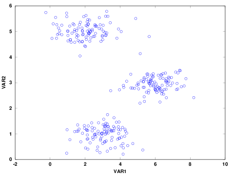
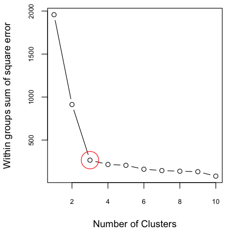

Cluster Analysis using K-means Algorithm
In this post, I illustrate the commonly used clustering algorithm called K-means using a self-written Octave functions/codes. Indeed, there are readily available R, python and octave packages/functions which I listed at the end of this post. Cluster analysis groups similar objects together so that objects in the same group are more similar. It can be used for market segmentation, social network analysis, astronomical data analysis, and so on (see for example Bjiuraj etal). K-means clustering is unsupervised learning algorithm that groups a given dataset into k coherent clusters so that each observation belongs to a group with the nearest mean. The number of clusters (Ks) should be known or determined a priori, and for each cluster we need to provide initial means(centroids).
The data used for this post is obtained from the course material of Machine Learning course offered by Prof Andrew Ng from Stanford University.
The steps listed below were followed to implement k-means algorithm:
Step-1: Randomly initialize k points in the dataset as cluster centroid
Step-2: Assign all observations into one of k groups based on which cluster centroid is closest to the observation. The closeness is measured by computing the square of the difference between each observation and the centroids (square of Euclidean distance).
Step-3: Update cluster centroids as the average of the observations inside the k cluster.
Step-4: Repeat steps 2 and 3 until the algorithm converges.
The code in this example is executable in Octave / Matlab Software.
Preparing and Exploring Data
First, import the data
% import the data
load('ex7data2.mat');
The data has 2 variables and 300 observations. The first five observations are shown below:
| N | VAR1 | VAR2 |
|---|---|---|
| 1 | 1.84208 | 4.60757 |
| 2 | 5.65858 | 4.79996 |
| 3 | 6.35258 | 3.29085 |
| 4 | 2.90402 | 4.61220 |
| 5 | 3.23198 | 4.93989 |
Before analyzing the data, it is good to explore and visualize to have a better sense of the data. For example, check the presence of missing values and visualize the distribution of the data. The summary statistics and scatter plot of the two continuous variables are shown below. There was no missing data in any of the variables. In addition the distribution of the two variables are similar.
Table 1: Summary Statistics
| N | Mean | Std Dev. | Min. | 1st Qu. | Median | 3rd Qu. | Max. | |
| VAR1 | 300 | 3.684 | 1.926 | 0.245 | 2.156 | 3.232 | 5.510 | 8.203 |
| VAR2 | 300 | 2.987 | 1.685 | 0.206 | 1.211 | 2.950 | 4.808 | 5.784 |
Figure 1: Scatter Plot of Variables
Determine Number of Clusters
The scatter plot indicates that there are three possible clusters. Often, the number of clusters are not clear or the number of variables are more than two and not straightforward to visualize. In such cases, one approach is to determine the optimal number of clusters using elbow method. The elbow method helps to visualize the sum of square errors (SSE) against the number of clusters, and helps to choose the best number of clusters based on a reasonably minimum SSE achieved for a reasonable small number of clusters. To make this plot, we need to run the algorithm for a number of clusters, for example 1 to 10. To confirm what was seen in the above figure, I plotted SSE against K. The variation on SSE after K=3 is minimal and therefore the figure indicates the presence of 3 clusters.
Figure 2: Sum of Square Error against Number of Clusters

Steps to Implement K-means Cluster
Step-1: Randomly Initialize k Centroids
Three observations are randomly selected from the dataset as initial centroids. Note that the centroids should be unique; however this doesn't guarantee that the k-means can't fall on local optima. Running the algorithm for several different random initials may help to avoid from falling on local optima.
% K (number of centroids)=3
K=3;
% X is a two dimensional dataset from which initial centroids are randomly selected
rand_idx= randperm(size(X,1));
initial_centroids= X(rand_idx(1:K), :);
centroids = initial_centroids;
previous_centroids = centroids;
Step-2: Assign each observation into one of the centroids
Assign each observation in the dataset to the closest centroid. The function findClosestCentroids, defined below, returns a vector containing the closest centroid for each observation.
function idx = findClosestCentroids(X, centroids)
[m,n]= size(X); % m and n are number of rows and columns of the dataset X ;
% Set K
K = size(centroids, 1);
dist= zeros(size(X, 1), K);
c=0;
for i= 1:m
for k=1:K
for j= 1:n
% the distance from each observation to a centroid
c= c+ (X(i,j)-centroids(k,j)).^2 ;
end
dist(i,k)= c; %distance of each observation from each centroid
c=0 ; % restart c to zero for next iteration
end
end
[min idx]= min(dist , [], 2);
idx; % a vector containing centroids closest to each observation
end
Step-3: Update cluster centroids
% compute new centroids for each cluster using a user-defined function “updateCentroids”.
function centroids = updateCentroids(X, idx, K)
clstr=0;
for k=1:K
clstr= find(idx==k); % to find row index where idx==k
centroids(k,:)= mean(X(clstr,:));
clstr=0;
end
end
Step-4: Repeat steps 2 and 3 until the algorithm converges.
In this example, the process stops when the maximum number of iteration reached.
% maximum iteration to be 10
max_iters = 10;
K=3;
% Plot the progress
figure;
hold on;
% Create palette for coloring
palette = hsv(K + 1);
%-------------------------------
%Run K-Means algorithm
%-------------------------------
for i=1:max_iters
% Output progress
fflush(stdout);
idx = findClosestCentroids(X, centroids);
% plot the progress
% Plot simillar clustergroups with the same color
colors = palette(idx, :);
scatter(X(:,1), X(:,2), 15, colors);
% Plot the centroids as black x's
plot(centroids(:,1), centroids(:,2), 'x', 'MarkerEdgeColor','k', 'MarkerSize', 10, 'LineWidth', 3);
% Plot the history of the centroids with lines
for j=1:size(centroids,1)
plot([centroids(j, 1), previous_centroids(j, 1)], [centroids(j, 2), previous_centroids(j, 2)]);
end
% Title
title(sprintf('Iteration number %d', i))
previous_centroids = centroids;
% compute new centroids for each cluster
centroids = updateCentroids(X, idx, K);
end;
hold off;
Figure 3: Scatter plot along with three clusters colored in red, green and blue.
The ☓s show the centroids at each iteration for a total number of 10 iterations.
Summary:
I hope this post gives an insight on how k-mean algorithm works. Alternatively, we can use the existing Octave, R or Python functions that can handle K-means cluster analysis. These functions are:
Octave: use the function kmeans from statistics package. For the details, you can refer to Octave documentation
R: use kmeans function from stats package. For the details, you can refer to R documentation.
Python: From scikit-learn package, you can use sklearn.cluster.KMeans class. For the details, you can refer to sklearn.cluster.KMeans documentation.
Or from graphlab package you can use kmeans.create() to perform cluster analysis. For the details, you can refer to graphlab.kmeans.create documentation.